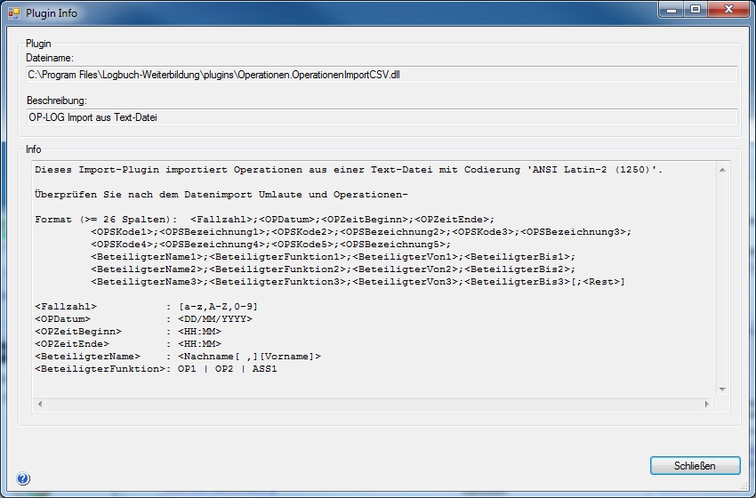

Wenn Sie einen manuellen Datenimport durchführen, wie er unter 'Extras > Datenimport > Durchgeführte Prozeduren importieren' beschrieben ist, können Sie sich zu einem Plugin (engl. eine Beschreibung anzeigen lassen.
Ein Plugin importiert Prozeduren, die in einem ganz bestimmten Datenformat vorliegen müssen. Für jedes verschiedenen Datenformat muss daher ein eigenes Plugin vorhanden sein.